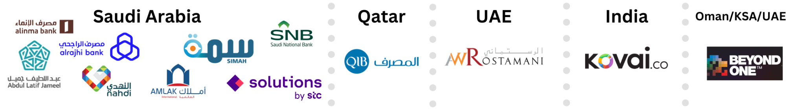

Professional Profile
Understanding and analyzing client system setups to identify vulnerabilities in Data Privacy is a core part of my work. This includes rapidly learning the functions of various applications and systems and their role within an organization. I understand developers today are expected to be cross-functional and build taking things from different areas of the web and leverage modern tools, because at the end what matters the most is the product. Having tried a plethora of solutions through the years, I believe I can adapt to your needs.
A Computer Science Engineer and current Technical Consultant with 2+ years of experience in the Data Privacy field conducting comprehensive privacy assessments with stakeholders, implementing automated data governance tools, and ensuring compliance with global regulations for multiple Forbes Top 100 MEA clients. Core strengths include expertise in data governance tools, optimizing cloud infrastructure, developing web apps on GIT, working with APIs, etc. I take pride to effectively communicate explain complex technical concepts through tailored presentations, reports, and manuals. Proven track record of collaborating cross-functionally to assess privacy risks, identify technical controls, and create compliance roadmaps. Also a certified ISO27001 Lead Auditor and Certified Data Protection Officer.
Work Experience
Technical Consultant - Governace, Risk & Compliance : Data Privacy
Associate Technical Consultant [Oct 22' - Feb 24']
Paramount Computer Systems LLC (And Sister Entities: Cybersecurity-NXXT & AhlanCyber)
Riyadh (On-Site), Dubai (Hybrid), India (Remote) | October 2022 - Present
-
Privacy Technical Assessments:
Worked across 8+ projects, carried Technical Assessments of applications to understand architecture, pinpoint data flow, privacy vulnerabilities, risks and proposed effective controls to mitigate identified risks. Lead technical assessment interviews with IT, Network & infrastructure heads and prepared TA reports for 100+ applications for a KSA-based conglomerate and 14 applications for a Qatar-Based banking client. Assisted with technical assessments for clients in the Automotive, Banking, Financial Services and IT industry. -
Data Governance Automation Tool Implementation:
Effectively deployed privacy tool modules, encompassing Assessment Automation (PIAs), Data Subject Rights (DSRs), Cookie and Consent Management, Privacy Notice, Data Mapping, Incident Management for vendors for clients(BFSI, Pharma, IT, Auto) on-site in KSA, and remotely. Certified partner for vendors Securiti.ai, OneTrust, BigID and provided ongoing post-implementation support for previous clients. -
Deliverables:
Created technical proposals for RFPs/RFQs. Created BRDs, vendor tool manuals, detailed reports on technical assessments, and MoMs. Collabrated with functional consultants on GAP assessment reports, evidence mapping, regulatory mapping against GDPR, UAE PDPL, Qatar PDPL, Qatar FIFA Cybersecurity Framework, KSA PDPL, NDMO, DIFC & AGDM regulatory frameworks. Reviewed client Cookie, Data Breach, Privacy policies. Prepared and conducted Kick-Off, Training, PDPO presentations as per client guidelines.
Some organizations I've worked with:
Salesforce Developer Intern
Novigo Solutions Pvt. Ltd., Mangalore, Aug 2021 - Oct 2021
-
Salesforce Application:
Got familiar and learned to manage Salesforce Objects, handle fields and relationships, work with Flow, manage Big Objects and platform APIs, and develop an e-commerce application using Apex and Visualforce pages 23% more efficient than an existing implementation.
SDE Intern
Scafe Branding, Kannur, May 2018 - May 2021
-
Cloud Administration:
Aided in reducing Amazon Web Services (AWS) hosting costs by rightsizing EC2 instances. Analyzed S3 usage and migrated a portion of client documents with uncommon access to S3 Glacier. Suggested implementing Responsive Images and employing CloudFlare as a CDN which resulted in a 60% increase in site performance, while significantly reducing costs incurred by about 35%. -
Virtual Tours:
Handled client requests for creating and hosting scalable immersive virtual experiences, and successfully did so by using marzipano.js, 360-degree photography, and numerous design tools. -
Website Development:
Proactively took steps to create solutions to accept sensitive data from users and implemented a form in PHP while using crypto-js, jQuery, and JavaScript to facilitate encryption of data on the client.
Education
P. A. College of Engineering (NBA Accredited, Affiliated to VTU, Belgaum)
Bachelor of Engineering - Computer Sciecne, Mangalore, Aug 2018 - July 2022
Courses: Operating Systems, Data Structures, Computer Organization and Architecture, Software Engineering, Object Oriented Concepts, Artificial Intelligence, Machine Learning, Networking, Hadoop, Big Data Pipeline, Data Mining & Warehousing
Skills Summary
-
Languages:
Python, PHP, C, JavaScript, SQL, Apex -
Tools/Frameworks:
Flask, GIT, Jenkins, MySQL, SVN, DynamoDB, NodeJS, Docker, Nginx, Cloudflare, Qdrant, Langchain, ERP -
Platforms:
AWS, Web, Microsoft Windows, Salesforce, Linux, Google Cloud Platform, Securiti, OneTrust, BigId -
Spoken Languages:
English (Native), Hindi (Proficient), Malayalam (Native)
Visa Info: USA B1/B2 till 2032, Oman Residence till March 2026, KSA Business Visa till March 2025
{kind=link}
{kind=link}
{kind=link}